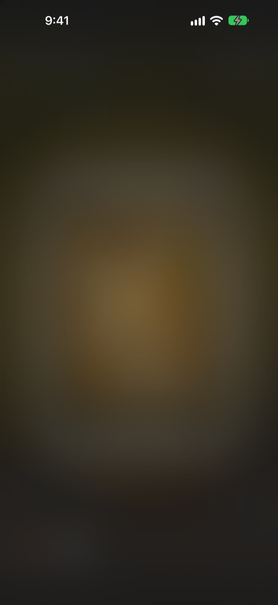
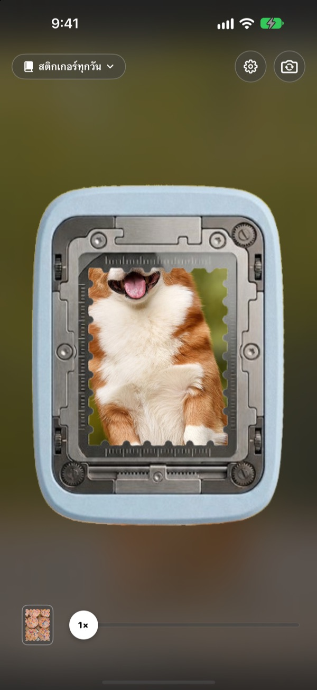
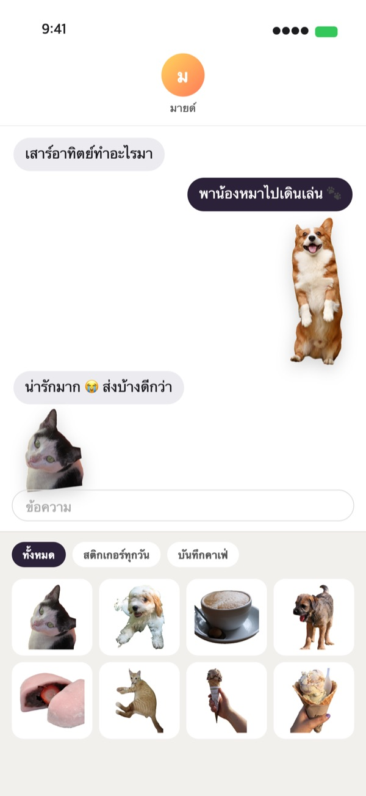
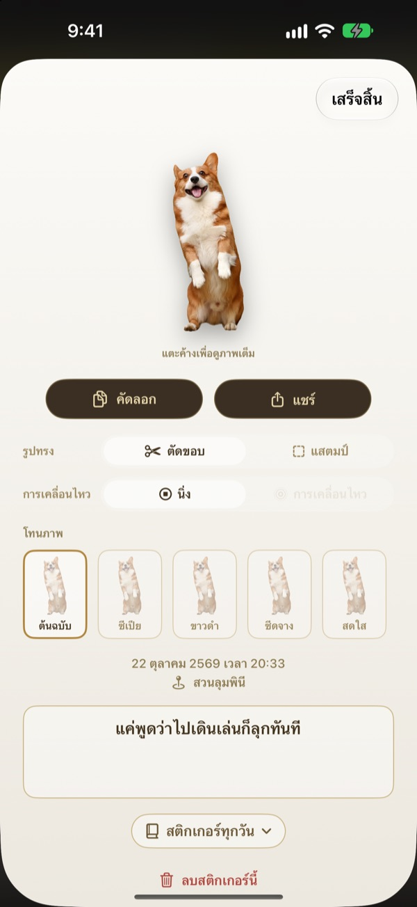
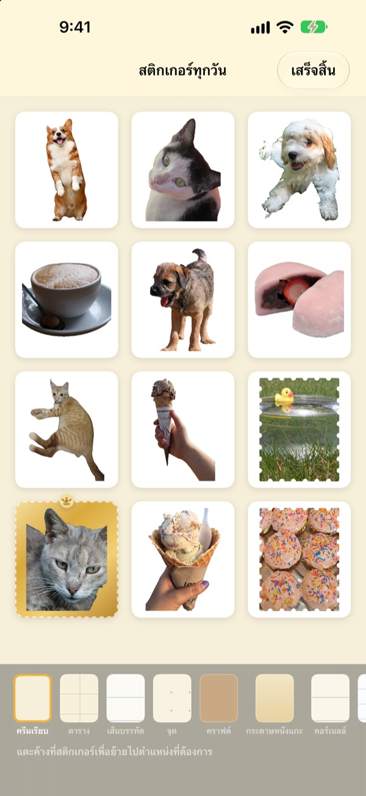

แตะค้างไว้
ช่วงเวลานั้นก็กลายเป็นสติกเกอร์
เล็งภาพให้อยู่ในช่องเจาะ แตะค้างแล้วปล่อย น้องหมาจะถูกตัดออกมาตามรูปร่างของน้องหมาเอง พร้อมการเคลื่อนไหวสั้น ๆ ก่อนและหลังกด สติกเกอร์ที่ฉีกได้ส่งต่อในข้อความหรือคีย์บอร์ดได้เลย
ใช้ฟรีทุกฟีเจอร์ สติกเกอร์และรูปภาพเก็บไว้ในเครื่องของคุณเท่านั้น

ลองฉีกดูเอง
เลือกภาพ แล้วแตะปุ่มเจาะค้างไว้ก่อนปล่อย ฉีกเสร็จแล้วลองเปลี่ยนรูปทรงและโทนสีดูได้
ช่วงเวลาน่ารัก ๆ มักหลับใหลอยู่ในคลังรูป
ถ่ายตอนน้องหมาแลบลิ้นได้แล้ว แต่จะส่งเป็นสติกเกอร์ให้เพื่อนก็ต้องหารูป ตัดพื้นหลัง แล้วเปิดแอปทำสติกเกอร์อีกตัว พอเสร็จ บทสนทนาก็ไปเรื่องอื่นแล้ว Punching ฉีกสติกเกอร์ออกมาตรงนั้นเลย และทันทีที่เก็บเข้าอัลบั้ม ก็ไปรออยู่ในลิ้นชักสติกเกอร์ของข้อความแล้ว
ตัวหลักถูกตัดออกมา วิวกลายเป็นแสตมป์
ถ้ามีสิ่งที่ตัดออกมาได้ เช่น คน สัตว์เลี้ยง หรือสิ่งของ ก็จะได้แค่ตัวนั้น ถ้าไม่มี อย่างภาพวิว ก็จะฉีกเป็นรูปแสตมป์ขอบหยัก
การเคลื่อนไหวสั้น ๆ ก่อนและหลังกดถูกเก็บไว้ด้วย สติกเกอร์จึงขยับได้

ใช้ในข้อความและคีย์บอร์ดได้ทันที
สติกเกอร์ที่ฉีกได้จะไปอยู่ในลิ้นชักสติกเกอร์ของแอปข้อความ เปิดคีย์บอร์ด Punching แล้วก็เลือกแปะในแอปอื่นได้ด้วย
สติกเกอร์ขยับได้ส่งไปก็ยังขยับ แตะค้างเพื่อคัดลอก แล้ววางได้ทุกที่

เปลี่ยนรูปทรงและโทนสีได้ทุกเมื่อ
สลับระหว่างตัดภาพกับแสตมป์ ขยับกับนิ่ง ได้ตลอด รูปต้นฉบับยังอยู่ครบ เปลี่ยนกี่ครั้งก็คมชัดเหมือนครั้งแรก
เลือกโทนสีจากต้นฉบับ ซีเปีย ขาวดำ ซีดจาง สดใส และฟ้าอมเขียว พร้อมจดข้อความสั้น ๆ วันที่ และสถานที่ได้

เก็บเป็นอัลบั้ม แล้วพิมพ์เป็นสติกเกอร์กระดาษ
สร้างอัลบั้มตามธีม แล้วในข้อความและคีย์บอร์ดก็เลือกตามอัลบั้มได้ เลือกพื้นกระดาษแบบคราฟต์ ตาราง เส้นบรรทัด หรือหนังแกะ และจัดลำดับได้ตามใจ
เปลี่ยนอัลบั้มเป็น PDF สำหรับพิมพ์ที่มีเส้นตัดรูปแสตมป์ แล้วพิมพ์ลงกระดาษสติกเกอร์ได้เลย

เริ่มได้ในสามขั้นตอน
- 1
เล็งให้ตรงช่อง
ใส่สิ่งที่อยากเก็บไว้ในช่องกลางกล้อง
- 2
แตะค้างแล้วปล่อย
สติกเกอร์จะฉีกออกมาตอนที่ปล่อยนิ้ว
- 3
เก็บแล้วส่ง
เก็บเข้าอัลบั้ม แล้วใช้ในข้อความและคีย์บอร์ดได้ทันที
ใช้ที่ไหน เปลี่ยนที่ไหน
- ข้อความ
- ＋ ข้างช่องพิมพ์ ▸ สติกเกอร์ ▸ สติกเกอร์ Punching
- แอปอื่น
- เปิดคีย์บอร์ด Punching สลับด้วยปุ่มลูกโลก แล้วเลือกแปะ
- ทุกที่
- แตะสติกเกอร์ค้างเพื่อคัดลอก แล้ววาง
- สติกเกอร์กระดาษ
- ⋯ ในอัลบั้ม ▸ ใช้งาน ▸ แผ่นสติกเกอร์สำหรับพิมพ์ (PDF)
- พื้นกระดาษและลำดับ
- ⋯ ในอัลบั้ม ▸ ตกแต่งอิสระ
- รูปเก่า
- นำเข้าจากรูปภาพในอัลบั้ม
- รูปทรงตอนฉีก
- การตั้งค่า ▸ ฉีก ▸ รูปทรงเริ่มต้น
- การแสดงการเคลื่อนไหว
- การตั้งค่า ▸ มุมมอง ▸ เล่นการเคลื่อนไหวอัตโนมัติ
- เปิดด่วน
- เปิดกล้อง Punching ในคำสั่งลัดหรือศูนย์ควบคุม
การตั้งค่าอยู่ที่ปุ่มรูปเฟืองมุมขวาบนของหน้ากล้อง
คำถามที่พบบ่อย
สติกเกอร์ไม่ขยับ
ที่มุมขวาบนของกล้อง ไปที่การตั้งค่า ▸ มุมมอง แล้วดูว่าเปิดเล่นการเคลื่อนไหวอัตโนมัติอยู่ จากนั้นแตะสติกเกอร์และดูว่าการเคลื่อนไหวใต้รูปทรงเปิดอยู่ การเคลื่อนไหวถูกบันทึกไว้เสมอ จึงเปิดได้ทุกเมื่อ รูปที่นำเข้าจากแอปรูปภาพมีแค่ภาพเดียว จึงไม่ขยับ
ได้แสตมป์แทนที่จะเป็นภาพตัด
ภาพที่ไม่มีอะไรให้ตัด อย่างภาพวิว จะถูกฉีกเป็นรูปแสตมป์โดยอัตโนมัติ แตะสติกเกอร์แล้วเปลี่ยนในรูปทรงได้ทุกเมื่อ ถ้าอยากให้ฉีกเป็นแสตมป์ตั้งแต่แรก ให้เปลี่ยนที่การตั้งค่า ▸ ฉีก ▸ รูปทรงเริ่มต้น
ไม่เห็นสติกเกอร์ในข้อความ
ในแอปข้อความ แตะปุ่ม ＋ ข้างช่องพิมพ์ ▸ สติกเกอร์ แล้วหาสติกเกอร์ Punching จะปรากฏเมื่อคุณฉีกสติกเกอร์ใน Punching อย่างน้อยหนึ่งแผ่น และถ้ามีอัลบั้มมากกว่าหนึ่ง ก็เลือกดูทีละอัลบั้มได้ ดูขั้นตอนละเอียดได้ที่การตั้งค่า ▸ ใช้งาน ▸ ใช้ในข้อความและคีย์บอร์ด
เปิดคีย์บอร์ดอย่างไร
ที่การตั้งค่า ▸ ใช้งาน ▸ ใช้ในข้อความและคีย์บอร์ด แตะ “เปิดการตั้งค่า” แล้วไปที่คีย์บอร์ด ▸ เปิดสติกเกอร์ Punching การวางสติกเกอร์ต้องเปิดอนุญาตการเข้าถึงเต็มรูปแบบ แต่คีย์บอร์ดไม่อ่านหรือส่งสิ่งที่คุณพิมพ์ และไม่เชื่อมต่ออินเทอร์เน็ต จากนั้นในแอปใดก็ได้ แตะปุ่มลูกโลกบนคีย์บอร์ดเพื่อสลับไปใช้สติกเกอร์ Punching
อยากพิมพ์เป็นสติกเกอร์จริง
แตะ ⋯ ที่มุมขวาบนของอัลบั้ม ▸ ใช้งาน ▸ แผ่นสติกเกอร์สำหรับพิมพ์ (PDF) จะได้ PDF ความละเอียด 300dpi ของทั้งอัลบั้ม พร้อมเส้นตัดรูปแสตมป์ พิมพ์ลงกระดาษสติกเกอร์ด้วยเครื่องพิมพ์ที่บ้านหรือส่งร้านพิมพ์ได้เลย ขั้นตอนละเอียดอยู่ในคู่มือการพิมพ์ในเมนูเดียวกัน
คอลเลกชันเดิมของฉันหายไปไหน
ตั้งแต่เวอร์ชัน 1.0.1 สติกเกอร์จัดกลุ่มได้แบบเดียวคืออัลบั้ม คอลเลกชันแต่ละชุดกลายเป็นอัลบั้มชื่อเดียวกัน และสติกเกอร์ พื้นกระดาษ กับลำดับในนั้นถูกย้ายมาตามเดิม
มีไฟสีเขียวที่แถบสถานะ
นั่นคือไฟแสดงการใช้กล้องของ iOS จะติดเฉพาะตอนที่หน้ากล้องเปิดอยู่ เมื่อเปิดอัลบั้ม กล้องจะหยุดและไฟจะดับ
ลบสติกเกอร์แล้วจะเป็นอย่างไร
สติกเกอร์ รูปต้นฉบับ และข้อมูลการเคลื่อนไหวจะถูกลบออกจากเครื่องอย่างถาวร และหายไปจากลิ้นชักสติกเกอร์ของข้อความด้วย กู้คืนไม่ได้ จึงควรลบอย่างระมัดระวัง
รูปและสติกเกอร์เก็บไว้ที่ไหน
เก็บไว้ในเครื่องของคุณเท่านั้น ไม่มีบัญชี ไม่มีเซิร์ฟเวอร์ของเราเอง และไม่มีโฆษณา สิ่งที่ออกจากเครื่องมีแค่สถิติการใช้งานแบบไม่ระบุตัวตน รายงานข้อผิดพลาด และความคิดเห็นที่คุณส่งเอง ดูรายละเอียดได้ในนโยบายความเป็นส่วนตัว
ฟรีจริงไหม
จริง ใช้ได้ฟรีทุกฟีเจอร์ ถ้าชอบ ก็ให้ทิปนักพัฒนาในแอปได้ แต่ทิปไม่ได้ปลดล็อกอะไรเพิ่ม
มีคำถามหรือข้อเสนอแนะ ส่งมาที่ leeo@kakao.com ได้เลย ปกติเราตอบภายใน 2–3 วัน แจ้งบั๊กหรือเสนอฟีเจอร์ผ่าน issue บน GitHub ที่ M1zz/StampCamera ก็ได้